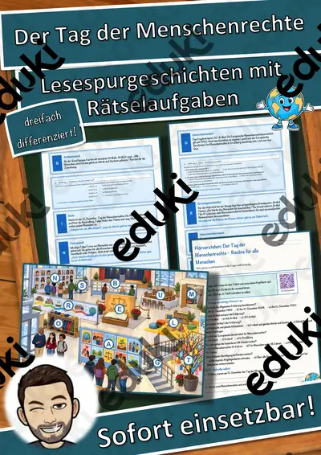
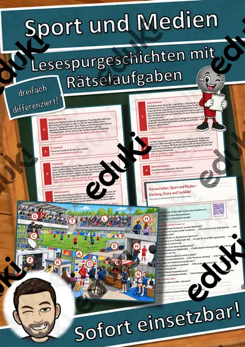
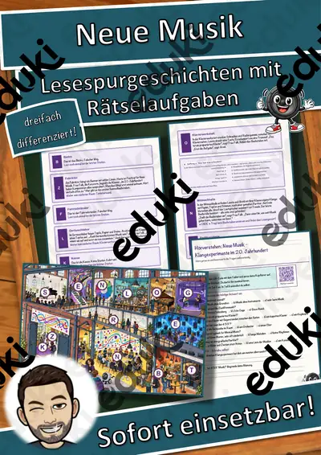
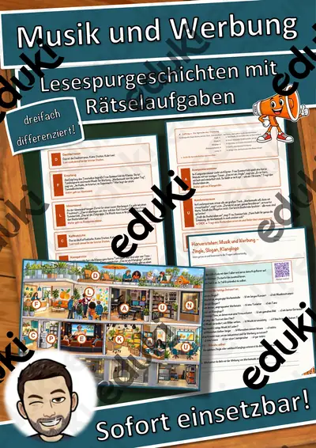
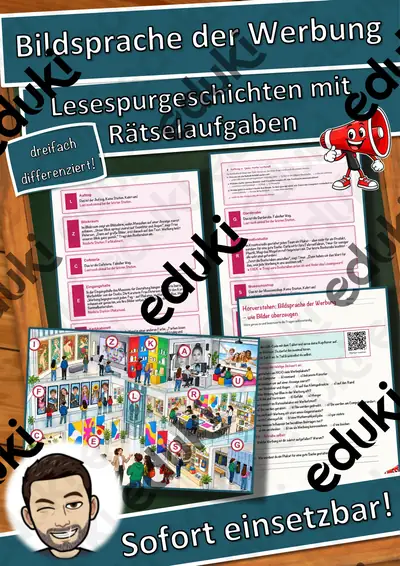
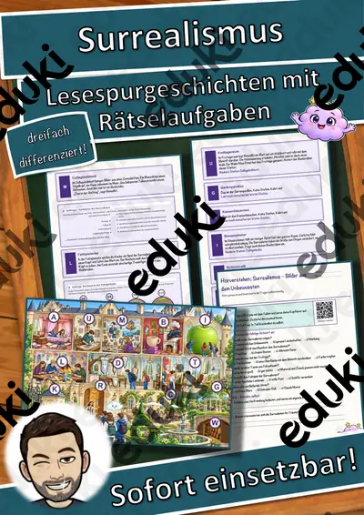
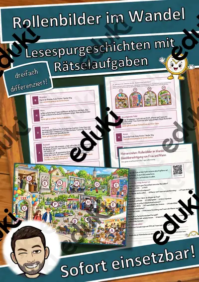

Der Tag der Menschenrechte – Rechte für alle Menschen – Lesespurgeschichte mit Rätselaufgaben (Klasse 10)

Lesespur: Die erste Steuererklärung: Lohnsteuer, Werbungskosten und Erstattung – Lesespurgeschichte mit Rätseln (Klasse 10)

Gentechnik – Chancen und Risiken abwägen – Lesespurgeschichte mit Rätselaufgaben (Klasse 10)

Lesespur: Der Mauerfall: vom geteilten Land zur Einheit – Lesespurgeschichte mit Rätseln (Klasse 10)

Lesespur: Kinderrechte bei uns: wer sie schützt – Lesespurgeschichte mit Rätseln (Klasse 10)

Der Hackathon – im Team eine digitale Idee entwickeln – Lesespurgeschichte mit Rätselaufgaben (Klasse 10)

Datenkompression – wie Dateien klein werden – Lesespurgeschichte mit Rätselaufgaben (Klasse 10)

Selbstfahrende Autos – Chancen und Risiken – Lesespurgeschichte mit Rätselaufgaben (Klasse 10)

Lesespur: Deepfakes: gefälschte Bilder und Videos erkennen – Lesespurgeschichte mit Rätseln (Klasse 10)

Lesespur: Objekte und Klassen: modellieren wie Informatiker – Lesespurgeschichte mit Rätseln (Klasse 10)

Lesespur: Datenbanken: Ordnung im Fundbüro – Lesespurgeschichte mit Rätseln (Klasse 10)

Lesespur: E-Sport: ist das Sport? – Lesespurgeschichte mit Rätseln (Klasse 10)

Lesespur: Sport und Medien: Werbung, Stars und Vorbilder – Lesespurgeschichte mit Rätseln (Klasse 10)

Sportgeschichte der Frauen – Hürden, Rekorde und gleiche Chancen – Lesespurgeschichte mit Rätselaufgaben (Klasse 10)

Trainingsplanung – wie man gezielt besser wird – Lesespurgeschichte mit Rätselaufgaben (Klasse 10)

Doping – Betrug am Sport und am eigenen Körper – Lesespurgeschichte mit Rätselaufgaben (Klasse 10)

Lesespur: Streaming und Urheberrecht: Geld, Rechte und Musik – Lesespurgeschichte mit Rätseln (Klasse 10)

Neue Musik – Klangexperimente im 20. Jahrhundert – Lesespurgeschichte mit Rätselaufgaben (Klasse 10)

Lesespur: Elektronische Musik: vom Theremin bis zum Laptop – Lesespurgeschichte mit Rätseln (Klasse 10)

Lesespur: Musik und Werbung: Jingle, Slogan, Klanglogo – Lesespurgeschichte mit Rätseln (Klasse 10)

Lesespur: Digitale Kunst: vom Pixel zur Projektion – Lesespurgeschichte mit Rätseln (Klasse 10)

Bildsprache der Werbung – wie Bilder überzeugen – Lesespurgeschichte mit Rätselaufgaben (Klasse 10)

Architektur der Gegenwart – nachhaltig bauen – Lesespurgeschichte mit Rätselaufgaben (Klasse 10)

Lesespur: Surrealismus: Bilder aus dem Unbewussten – Lesespurgeschichte mit Rätseln (Klasse 10)

Expressionismus – Farbe als Gefühl – Lesespurgeschichte mit Rätselaufgaben (Klasse 10)

Das Bauhaus – Design für alle – Lesespurgeschichte mit Rätselaufgaben (Klasse 10)

Lesespur: Was darf die Medizin?: Grundfragen der Medizinethik – Lesespurgeschichte mit Rätseln (Klasse 10)

Fair wirtschaften – Wirtschaftsethik zwischen Gewinn und Verantwortung – Lesespurgeschichte mit Rätselaufgaben (Klasse 10)

Rollenbilder im Wandel – Gleichberechtigung von Frau und Mann – Lesespurgeschichte mit Rätselaufgaben (Klasse 10)

Lesespur: Die Anfänge der Philosophie: eine Zeitreise ins antike Athen – Lesespurgeschichte mit Rätseln (Klasse 10)
Keine Materialien gefunden – versuch einen anderen Suchbegriff oder Filter.
Abschlussklasse: Weniger, aber gezielt
Der Jahrgang 10 hat weniger, aber gezieltere Materialien als die Mittelstufe. Sie decken Abschlussprüfung, Berufswahl und gesellschaftliche Themen ab.
Prüfung und Beruf
Für Englisch gibt es die „MSA Englisch Klasse 10 Probeprüfung“ mit Reading, Mediation und Writing, dazu Steckbriefe zu den Bundesstaaten der USA wie „Steckbrief Wyoming“ und „Steckbrief Vermont“. Arbeitslehre liefert „Berufswahl: Interessen & Stärken-Check“ und Berufssteckbriefe zu Hotelfach, Friseur und Zerspanungsmechanik.
Wirtschaft und Politik
„Die erste Steuererklärung“, „Die Globalisierung“, „Ausbildungsvertrag Basics“ und „Verhalten im Betrieb“ führen in Wirtschaft ein. Politik bringt „Der Tag der Menschenrechte“, „Kinderrechte bei uns“ und „Bundestagswahl“.
Kunst, Medien, Ethik
Kunst führt durch „Surrealismus“, „Expressionismus“, „Das Bauhaus“, „Architektur der Gegenwart“ und „Bildsprache der Werbung“. Deutsch behandelt „Streaming und Urheberrecht“, „Musik und Werbung“ und „Digitale Kunst“. Informatik: „Deepfakes“ und „Datenkompression“. Ethik: „Was darf die Medizin?“, „Fair wirtschaften“ und „Rollenbilder im Wandel“. Biologie: „Gentechnik“.
Gezielt auswählen
In Klasse 10 steht der Abschluss im Vordergrund, und die Zeit ist knapp. Deshalb sind die Materialien für Stunden gedacht, die sich in kurzer Zeit einsetzen lassen: ein Kunstepochenblatt, eine Probeprüfung, ein Medienthema zum Einstieg. Jedes Blatt kommt mit Lösung und erklärt sich selbst. So eignet es sich auch für Vertretung, Projekttage oder die Phase nach den Prüfungen. Die Fachfilter und die Suche führen dich zu weiteren Titeln, die hier nicht einzeln stehen.
Der Jahrgang ist im Katalog kleiner als die Mittelstufe, dafür sind die Themen eng an Berufswahl, Gesellschaft und Medien gebunden. Wer mehr Auswahl braucht, wirft auch einen Blick auf Klasse 9.
Nach den Prüfungen
Gerade in den Wochen nach den Abschlussprüfungen sind Kunst-, Medien- und Ethikthemen beliebt, weil sie ohne Notendruck zum Nachdenken einladen.
Häufige Fragen
Gibt es eine Probeprüfung?
Ja, für Englisch mit Reading, Mediation und Writing auf Niveau B1.
Gibt es Material für die Berufswahl?
Ja, mit Stärken-Check und Berufssteckbriefen.
Warum ist das Angebot kleiner als in Klasse 9?
Der Katalog ist in Klasse 10 auf Prüfung und Gesellschaft fokussiert.
Gibt es etwas zu Drogen und Gesundheit?
Ja, das Materialpaket Drogen in Biologie.